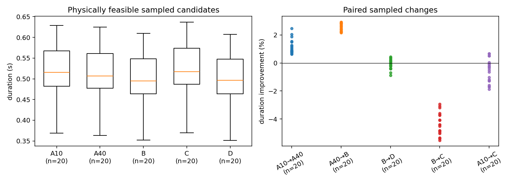
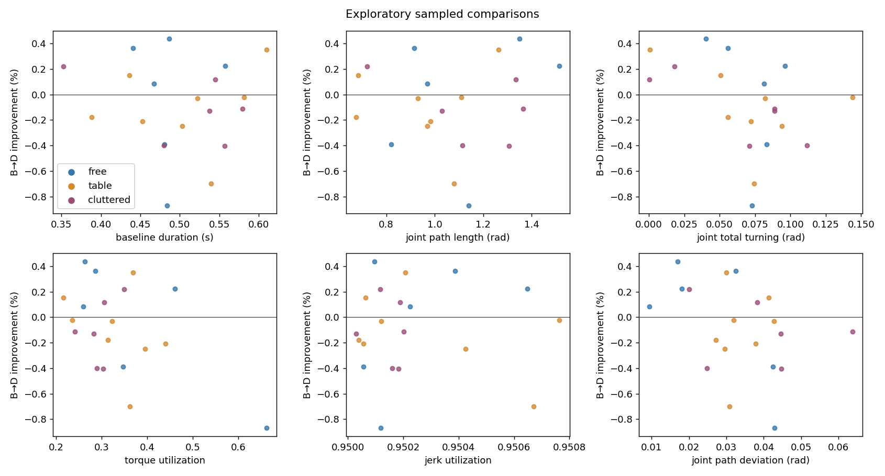
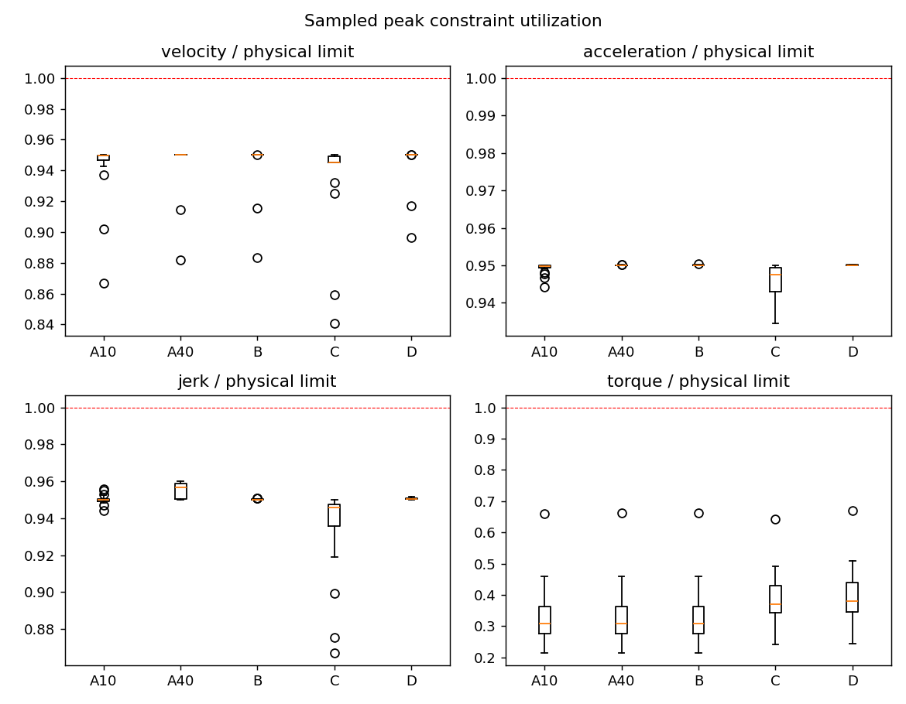
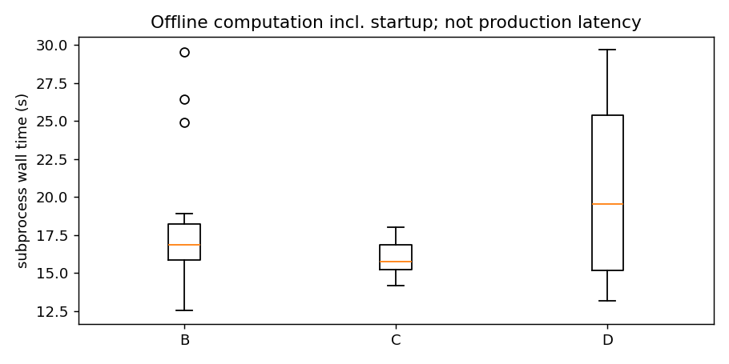

Results are independently sampled local candidates, not global optima or continuous-time certificates. Collision checks include neighborhoods of detected sampled minima, not continuous swept certificates; full CUDA collision-gradient qualification remains incomplete. Physical and scaled results use different restored candidates where needed. No 100-task confirmation has been run.
Implementation frozen at commit 2f4b1dd5d604d8f9b591a68b0695791dd0948412. B and D retain the exact original geometric curves with matched timing formulations. C includes feasibility-restored initial fits when solver iterates fail; see candidate origin per case. Timing comparisons are exploratory and conditional on sampled feasibility.
The pointwise fixed-path timing Jacobian has a finite-difference sweep test and the timing NLP used local-support sparse Jacobian structure. The historical CUDA joint-optimizer Jacobian audit still contains discrepancies associated with active-sample/contact switches; those cases are not all classified, so the joint optimizer's derivative path is not fully qualified. B and D converged to local discretized IPOPT solutions on 20/20 tasks each. C produced a solver-converged selected candidate on only 2/20; feasible nonconverged candidates remain in the analysis. No result has a global-optimality certificate. See pointwise Jacobian evidence and the historical derivative audit.

| Contrast | Paired / attempted | Median % | Mean % | Bootstrap 95% CI | Faster / slower | >1%, >5%, >10% | Median |Δ| ms |
|---|---|---|---|---|---|---|---|
| A10→A40 | 20/20 | 0.891 | 1.132 | [0.826, 1.227] | 20 / 0 | 8, 0, 0 | 4.876 |
| A40→B | 20/20 | 2.577 | 2.553 | [2.368, 2.788] | 20 / 0 | 20, 0, 0 | 13.105 |
| B→D | 20/20 | -0.072 | -0.087 | [-0.249, 0.135] | 8 / 12 | 0, 0, 0 | 1.101 |
| B→C | 20/20 | -4.469 | -4.392 | [-4.911, -3.894] | 0 / 20 | 0, 0, 0 | 20.613 |
| A10→C | 20/20 | -0.433 | -0.575 | [-1.224, -0.108] | 5 / 15 | 0, 0, 0 | 2.989 |
| Contrast | Paired / attempted | Median % | Mean % | Bootstrap 95% CI | Faster / slower | >1%, >5%, >10% | Median |Δ| ms |
|---|---|---|---|---|---|---|---|
| A10→A40 | 20/20 | 0.818 | 0.988 | [0.718, 1.026] | 20 / 0 | 6, 0, 0 | 3.747 |
| A40→B | 20/20 | 2.706 | 2.710 | [2.651, 2.815] | 20 / 0 | 20, 0, 0 | 14.026 |
| B→D | 20/20 | -0.074 | -0.097 | [-0.247, 0.113] | 8 / 12 | 0, 0, 0 | 1.146 |
| B→C | 20/20 | -4.453 | -4.373 | [-4.887, -3.874] | 0 / 20 | 0, 0, 0 | 20.501 |
| A10→C | 20/20 | -0.387 | -0.540 | [-1.174, -0.090] | 5 / 15 | 0, 0, 0 | 2.999 |


| Population | Limits | A10→A40 | A40→B | B→D | B→C |
|---|---|---|---|---|---|
| free | physical | 0.921% (n=6) | 2.791% (n=6) | 0.154% (n=6) | -4.950% (n=6) |
| free | scaled95 | 0.857% (n=6) | 2.815% (n=6) | 0.145% (n=6) | -4.924% (n=6) |
| table | physical | 0.876% (n=8) | 2.435% (n=8) | -0.104% (n=8) | -4.406% (n=8) |
| table | scaled95 | 0.805% (n=8) | 2.672% (n=8) | -0.110% (n=8) | -4.397% (n=8) |
| cluttered | physical | 0.992% (n=6) | 2.473% (n=6) | -0.122% (n=6) | -4.266% (n=6) |
| cluttered | scaled95 | 0.813% (n=6) | 2.730% (n=6) | -0.128% (n=6) | -4.252% (n=6) |

Population-specific means, confidence intervals and failure exclusions are in the linked machine-readable statistics. A10 and A40 are fixed iteration budgets, not convergence certificates. B/D status refers to a local discretized NLP. See per-task pages for sampled constraint diagnostics, path lengths, and candidate origins.
Physical statistics · Scaled statistics · Earlier native-only exploratory report
| Task | Population | A10 (s) | A40 (s) | B (s) | C (s) | D (s) |
|---|---|---|---|---|---|---|
| pilot_free_00 | free | 0.457951 ✓ | 0.454090 ✓ | 0.440897 ✓ | 0.454985 ✓ | 0.439297 ✓ |
| pilot_free_01 | free | 0.497804 ✓ | 0.494136 ✓ | 0.480440 ✓ | 0.506225 ✓ | 0.482311 ✓ |
| pilot_free_02 | free | 0.501830 ✓ | 0.497956 ✓ | 0.483957 ✓ | 0.509800 ✓ | 0.488165 ✓ |
| pilot_free_03 | free | 0.577655 ✓ | 0.570364 ✓ | 0.557762 ✓ | 0.584868 ✓ | 0.556508 ✓ |
| pilot_free_04 | free | 0.508855 ✓ | 0.499303 ✓ | 0.486359 ✓ | 0.506218 ✓ | 0.484238 ✓ |
| pilot_free_05 | free | 0.486078 ✓ | 0.481224 ✓ | 0.467526 ✓ | 0.491094 ✓ | 0.467134 ✓ |
| pilot_table_00 | table | 0.563678 ✓ | 0.552177 ✓ | 0.539788 ✓ | 0.564152 ✓ | 0.543569 ✓ |
| pilot_table_01 | table | 0.409212 ✓ | 0.399129 ✓ | 0.388492 ✓ | 0.407174 ✓ | 0.389185 ✓ |
| pilot_table_02 | table | 0.629003 ✓ | 0.625017 ✓ | 0.609784 ✓ | 0.636542 ✓ | 0.607634 ✓ |
| pilot_table_03 | table | 0.539868 ✓ | 0.535294 ✓ | 0.522276 ✓ | 0.541765 ✓ | 0.522430 ✓ |
| pilot_table_04 | table | 0.469793 ✓ | 0.465988 ✓ | 0.452773 ✓ | 0.472805 ✓ | 0.453720 ✓ |
| pilot_table_05 | table | 0.451976 ✓ | 0.448123 ✓ | 0.436152 ✓ | 0.457798 ✓ | 0.435488 ✓ |
| pilot_table_06 | table | 0.523126 ✓ | 0.515057 ✓ | 0.503393 ✓ | 0.523816 ✓ | 0.504646 ✓ |
| pilot_table_07 | table | 0.599813 ✓ | 0.594416 ✓ | 0.581648 ✓ | 0.599586 ✓ | 0.581769 ✓ |
| pilot_cluttered_00 | cluttered | 0.598730 ✓ | 0.594811 ✓ | 0.579571 ✓ | 0.600373 ✓ | 0.580230 ✓ |
| pilot_cluttered_01 | cluttered | 0.554799 ✓ | 0.549902 ✓ | 0.537768 ✓ | 0.557652 ✓ | 0.538470 ✓ |
| pilot_cluttered_02 | cluttered | 0.368520 ✓ | 0.362951 ✓ | 0.352403 ✓ | 0.369441 ✓ | 0.351632 ✓ |
| pilot_cluttered_03 | cluttered | 0.564537 ✓ | 0.558321 ✓ | 0.545009 ✓ | 0.575074 ✓ | 0.544372 ✓ |
| pilot_cluttered_04 | cluttered | 0.497647 ✓ | 0.494093 ✓ | 0.480235 ✓ | 0.506163 ✓ | 0.482155 ✓ |
| pilot_cluttered_05 | cluttered | 0.577517 ✓ | 0.570631 ✓ | 0.557208 ✓ | 0.573593 ✓ | 0.559463 ✓ |
✓ = sampled physical pass; ! = sampled failure. Missing methods are never counted as zero improvement.
Largest sampled B→D change: pilot_free_04 (0.436%); smallest: pilot_free_02 (-0.870%). Longer joint path but shorter duration: pilot_free_00, pilot_free_03, pilot_free_04, pilot_free_05, pilot_table_02, pilot_table_05, pilot_cluttered_02, pilot_cluttered_03.
Across 20 physically sampled B–D pairs, the median geometric change is -0.07% (paired bootstrap 95% interval [-0.25%, 0.13%]); 8 are faster and 12 slower. This small generated pilot cannot establish a general or global effect. Fixed-path solver local minima and nonconverged joint optimization can mask possible improvements. Geometry approximation in C initialization, sampled constraints, model approximations and limited homotopy exploration prevent a global conclusion. Native iteration gains and solver differences are shown separately.